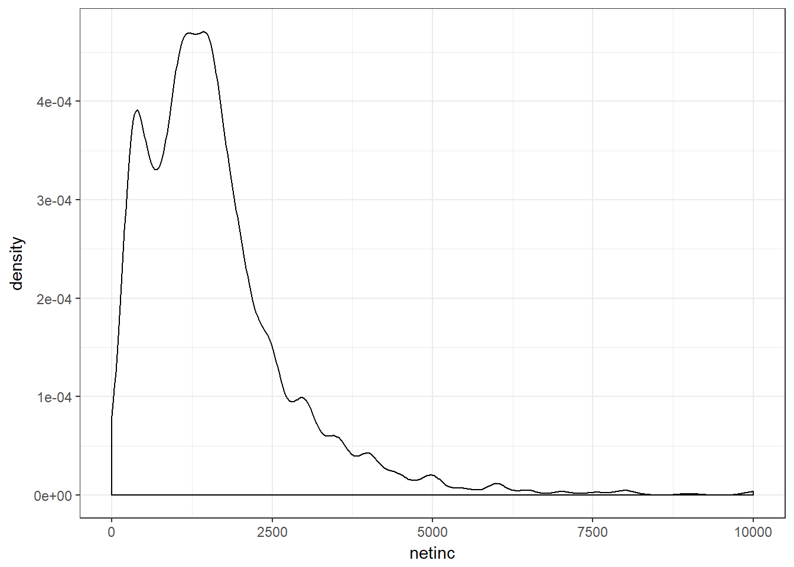
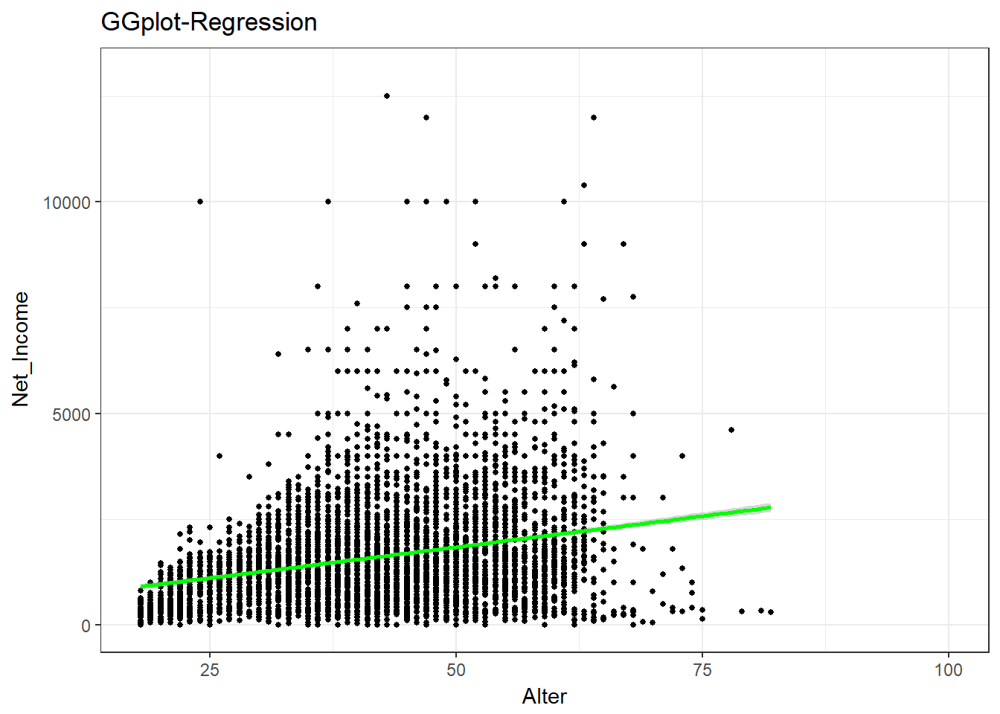
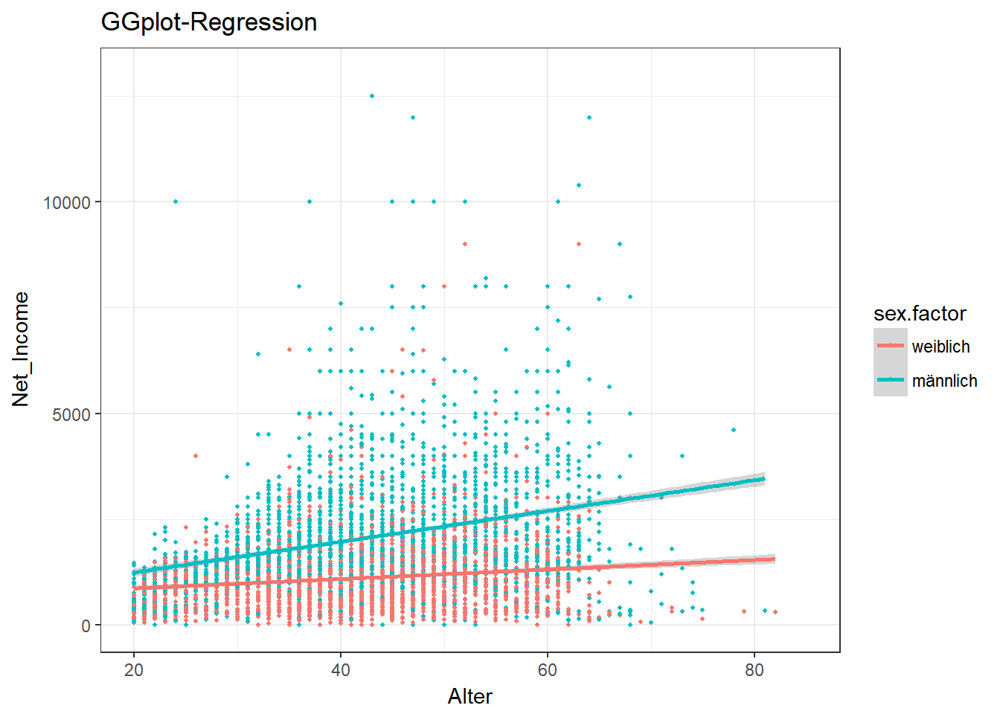
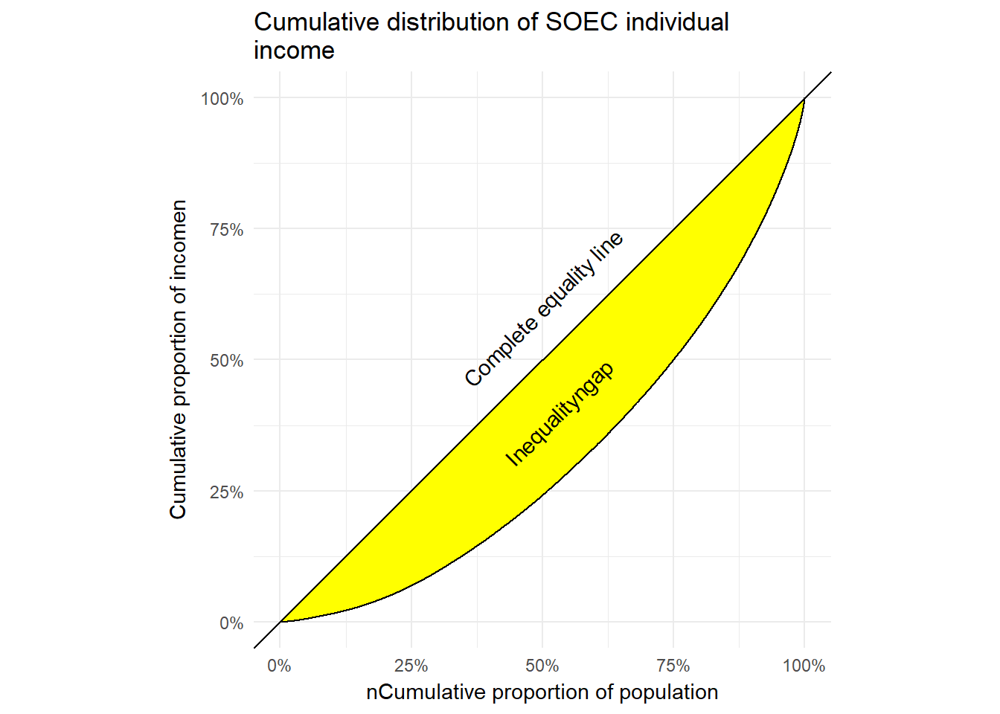

### Content ### ggplot | ddply | apa-Outputs | Inequality detection
# 13 Packages & Working Directory
# 24 Recoding Variables & Regression
# 42 Introduction to GGplot
# 57 Interaction Plotting in ggplot: Gender Wage-Gap
# 80 GAM (Generalized additive models with integrated smoothness estimation)
# 100 ddply & Data Management
# 116 Descriptive Statistics export in apa-Style
# 147 Inequality Detection: Plotting the Lorenz-Curve & ineq. gap
library(car) #Recode-Operations
library(ggplot2) #Graphical Design
library(mgcv) # GAM (Generalized additive models with integrated smoothness estimation)## Loading required package: nlme## This is mgcv 1.8-22. For overview type 'help("mgcv-package")'.library(readstata13)
# If your project-surrounding doesn't work, use setwd manually
SOEP2 <- read.dta13(file="data/offline/soep/new8.dta" , convert.factors=F)
# Recoding
SOEP2$alter = 2003 - SOEP2$gebjahr
SOEP2$alter [SOEP2$alter == 2004] <- NA # erase nas
SOEP2$netinc = recode(SOEP2$tp7602,"-3=NA;-2=NA;-1=NA")
# Multivariate Regression Sex & Age
mod1=lm(netinc~sex+alter, data=SOEP2)
summary(mod1)##
## Call:
## lm(formula = netinc ~ sex + alter, data = SOEP2)
##
## Residuals:
## Min 1Q Median 3Q Max
## -2792.8 -641.2 -170.0 403.7 22799.9
##
## Coefficients:
## Estimate Std. Error t value Pr(>|t|)
## (Intercept) 1760.644 71.133 24.75 <2e-16 ***
## sex -902.697 29.800 -30.29 <2e-16 ***
## alter 27.962 1.257 22.25 <2e-16 ***
## ---
## Signif. codes: 0 '***' 0.001 '**' 0.01 '*' 0.05 '.' 0.1 ' ' 1
##
## Residual standard error: 1139 on 5888 degrees of freedom
## (8590 observations deleted due to missingness)
## Multiple R-squared: 0.2014, Adjusted R-squared: 0.2011
## F-statistic: 742.5 on 2 and 5888 DF, p-value: < 2.2e-16# A deeper look at income
ggplot(data=SOEP2,aes(x=netinc)) +
geom_density()+
xlim(0,10000)+
theme_bw()## Warning: Removed 8596 rows containing non-finite values (stat_density).
# Ggplot Darstellung
ggplot(data=SOEP2, #dataset
aes(x=alter,y=netinc))+ #aestetics
geom_point(size=1)+ # what you want to be plotted
xlim(18,100) + # readjust xlim
ylim(0,13000) + # dump the superrich
ggtitle("GGplot-Regression") +
xlab ("Alter")+
ylab ("Net_Income") +
theme_bw()+ # makes it nice and black-and-white
stat_smooth(method = "lm", formula = y~x, color="green")## Warning: Removed 8623 rows containing non-finite values (stat_smooth).## Warning: Removed 8623 rows containing missing values (geom_point).
# Applied Feminism: Is there a gender effect?
SOEP2$sex.factor <- factor(SOEP2$sex , levels = c(2,1), labels= c("weiblich","männlich"))
mod2=lm(netinc~sex.factor*alter, data=SOEP2) # Interaction Terms
summary(mod2) # How do you interpret the interaction term?##
## Call:
## lm(formula = netinc ~ sex.factor * alter, data = SOEP2)
##
## Residuals:
## Min 1Q Median 3Q Max
## -3263.7 -628.2 -167.0 368.3 22727.0
##
## Coefficients:
## Estimate Std. Error t value Pr(>|t|)
## (Intercept) 550.700 78.470 7.018 2.50e-12 ***
## sex.factormännlich -198.689 107.421 -1.850 0.0644 .
## alter 13.350 1.851 7.211 6.25e-13 ***
## sex.factormännlich:alter 26.671 2.501 10.663 < 2e-16 ***
## ---
## Signif. codes: 0 '***' 0.001 '**' 0.01 '*' 0.05 '.' 0.1 ' ' 1
##
## Residual standard error: 1128 on 5887 degrees of freedom
## (8590 observations deleted due to missingness)
## Multiple R-squared: 0.2165, Adjusted R-squared: 0.2161
## F-statistic: 542.4 on 3 and 5887 DF, p-value: < 2.2e-16ggplot(data=SOEP2, #dataset
aes(x=alter,y=netinc,group=sex.factor))+
geom_point(size=0.7,aes(color=sex.factor)) + # what you want to be plotted
xlim(20,85) + # readjust xlim
ylim(0,13000) + # dump the superrich
ggtitle("GGplot-Regression") +
xlab ("Alter")+
ylab ("Net_Income") +
theme_bw() + # makes it nice and black-and-white
scale_color_discrete() +
stat_smooth(method = "lm", formula = y~x, aes(color=sex.factor)) ## Warning: Removed 8748 rows containing non-finite values (stat_smooth).## Warning: Removed 8748 rows containing missing values (geom_point).
# GAM
# Alternativ Normales lm-Modell letzte Zeile ersetzen durch GAM (Generalized additive models with integrated smoothness estimation)
library(hrbrthemes)
library(extrafont)
gg <-
ggplot(data=SOEP2, #dataset
aes(x=alter,y=netinc, #aestetics
group=sex.factor))+
geom_point(size=0.7,aes(color=sex.factor)) + # what you want to be plotted
xlim(20,85) + # readjust xlim
ylim(0,13000) + # dump the superrich
labs(x = "alter",
y = "income",
title = "Titel",
subtitle = "SUB",
caption = "lalal")+
scale_color_discrete()+
stat_smooth(method = gam, formula= y ~ s(x),aes(color=sex.factor))+
hrbrthemes::theme_ipsum(grid = "Y")#
#ggsave(filename = "lala.pdf",plot = gg,device = "pdf",width = 10,height = 6,dpi = 1000)
# Ddply Stuff & Data Management
library(dplyr)##
## Attaching package: 'dplyr'## The following object is masked from 'package:nlme':
##
## collapse## The following object is masked from 'package:car':
##
## recode## The following objects are masked from 'package:stats':
##
## filter, lag## The following objects are masked from 'package:base':
##
## intersect, setdiff, setequal, unionlibrary(plyr)## -------------------------------------------------------------------------## You have loaded plyr after dplyr - this is likely to cause problems.
## If you need functions from both plyr and dplyr, please load plyr first, then dplyr:
## library(plyr); library(dplyr)## -------------------------------------------------------------------------##
## Attaching package: 'plyr'## The following objects are masked from 'package:dplyr':
##
## arrange, count, desc, failwith, id, mutate, rename, summarise,
## summarizedf <- ddply(.data = SOEP2,
.variables = c("sex.factor"), # Variablen to be used for splitting
.fun = summarize,
INCOME= mean(netinc,na.rm = TRUE),
SD_INCOME= sd(netinc,na.rm = TRUE),
AGE = mean(alter,na.rm = TRUE),
SD_AGE = sd(alter,na.rm = TRUE)
)
df## sex.factor INCOME SD_INCOME AGE SD_AGE
## 1 weiblich 1094.715 883.3647 39.94183 21.79035
## 2 männlich 2031.094 1395.6789 38.65829 21.37068# Descriptive Statistics in apa-Format
library(apaStyle)
df## sex.factor INCOME SD_INCOME AGE SD_AGE
## 1 weiblich 1094.715 883.3647 39.94183 21.79035
## 2 männlich 2031.094 1395.6789 38.65829 21.37068df_rounded <- df
df_rounded[,2:5] <- round(df[,2:5],1)
df_rounded## sex.factor INCOME SD_INCOME AGE SD_AGE
## 1 weiblich 1094.7 883.4 39.9 21.8
## 2 männlich 2031.1 1395.7 38.7 21.4apa.table(
data = df_rounded,
level1.header = c("","Income", "AGE"),
level1.colspan = c(1,2,2),
level2.header = c("SEX", "Mean", "SD", "Mean", "SD")
)$table
|
|
Income |
|
AGE |
||
|
SEX |
Mean |
SD |
|
Mean |
SD |
|
weiblich |
1094.7 |
883.4 |
|
39.9 |
21.8 |
|
männlich |
2031.1 |
1395.7 |
|
38.7 |
21.4 |
# 2-dimensional
# We imagine that we had a cross-national data set by assigning sampled countries of origin
SOEP2$country <- sample(c("germany","france","austria"),nrow(SOEP2),replace=TRUE,prob = c(0.5,0.25,0.25))
df2 <- ddply( .data = SOEP2,
.variables = c("country","sex.factor"), # Variablen to be used for splitting
.fun = summarize,
INCOME= mean(netinc,na.rm = TRUE),
SD_INCOME= sd(netinc,na.rm = TRUE),
AGE = mean(alter,na.rm = TRUE),
SD_AGE = sd(alter,na.rm = TRUE)
); df2## country sex.factor INCOME SD_INCOME AGE SD_AGE
## 1 austria weiblich 1060.603 772.0074 39.20255 21.79676
## 2 austria männlich 2061.510 1537.1768 38.91612 21.03848
## 3 france weiblich 1120.586 1088.7413 40.83672 22.00459
## 4 france männlich 1952.764 1221.4401 38.81180 21.28479
## 5 germany weiblich 1098.710 814.2203 39.86359 21.66450
## 6 germany männlich 2056.167 1402.2457 38.44432 21.59039# advanced R: Inequality detection
## inequality
library(RODBC)
library(ineq) # for Lc and Gini
library(dplyr)
library(ggplot2)
library(scales)
library(stringr) # for str_wrap
lorenz <- Lc(SOEP2$netinc)
lorenz_df <- data.frame(prop_pop = lorenz$p, income = lorenz$L) %>%
mutate(prop_equality = prop_pop)
ggplot(lorenz_df, aes(x = prop_pop, y = income)) +
geom_ribbon(aes(ymax = prop_equality, ymin = income), fill = "yellow") +
geom_line() +
geom_abline(slope = 1) +
scale_x_continuous("nCumulative proportion of population", label = percent) +
scale_y_continuous("Cumulative proportion of incomen", label = percent) +
theme_minimal(base_family = "myfont") +
coord_equal() +
annotate("text", 0.53, 0.4, label = "Inequalityngap", angle = 45,family = "myfont") +
annotate("text", 0.5, 0.6, label = "Complete equality line", angle = 45, family = "myfont") +
ggtitle (
str_wrap("Cumulative distribution of SOEC individual income ", 46))## Warning in grid.Call(C_textBounds, as.graphicsAnnot(x$label), x$x, x$y, :
## Zeichensatzfamilie in der Windows Zeichensatzdatenbank nicht gefunden## Warning in grid.Call(C_textBounds, as.graphicsAnnot(x$label), x$x, x$y, :
## Zeichensatzfamilie in der Windows Zeichensatzdatenbank nicht gefunden
## Warning in grid.Call(C_textBounds, as.graphicsAnnot(x$label), x$x, x$y, :
## Zeichensatzfamilie in der Windows Zeichensatzdatenbank nicht gefunden
## Warning in grid.Call(C_textBounds, as.graphicsAnnot(x$label), x$x, x$y, :
## Zeichensatzfamilie in der Windows Zeichensatzdatenbank nicht gefunden
## Warning in grid.Call(C_textBounds, as.graphicsAnnot(x$label), x$x, x$y, :
## Zeichensatzfamilie in der Windows Zeichensatzdatenbank nicht gefunden
## Warning in grid.Call(C_textBounds, as.graphicsAnnot(x$label), x$x, x$y, :
## Zeichensatzfamilie in der Windows Zeichensatzdatenbank nicht gefunden
## Warning in grid.Call(C_textBounds, as.graphicsAnnot(x$label), x$x, x$y, :
## Zeichensatzfamilie in der Windows Zeichensatzdatenbank nicht gefunden
## Warning in grid.Call(C_textBounds, as.graphicsAnnot(x$label), x$x, x$y, :
## Zeichensatzfamilie in der Windows Zeichensatzdatenbank nicht gefunden## Warning in grid.Call.graphics(C_text, as.graphicsAnnot(x$label), x$x, x
## $y, : Zeichensatzfamilie in der Windows Zeichensatzdatenbank nicht gefunden
## Warning in grid.Call.graphics(C_text, as.graphicsAnnot(x$label), x$x, x
## $y, : Zeichensatzfamilie in der Windows Zeichensatzdatenbank nicht gefunden
## Warning in grid.Call.graphics(C_text, as.graphicsAnnot(x$label), x$x, x
## $y, : Zeichensatzfamilie in der Windows Zeichensatzdatenbank nicht gefunden## Warning in grid.Call(C_textBounds, as.graphicsAnnot(x$label), x$x, x$y, :
## Zeichensatzfamilie in der Windows Zeichensatzdatenbank nicht gefunden
## Warning in grid.Call(C_textBounds, as.graphicsAnnot(x$label), x$x, x$y, :
## Zeichensatzfamilie in der Windows Zeichensatzdatenbank nicht gefunden## Warning in grid.Call.graphics(C_text, as.graphicsAnnot(x$label), x$x, x
## $y, : Zeichensatzfamilie in der Windows Zeichensatzdatenbank nicht gefunden## Warning in grid.Call(C_textBounds, as.graphicsAnnot(x$label), x$x, x$y, :
## Zeichensatzfamilie in der Windows Zeichensatzdatenbank nicht gefunden